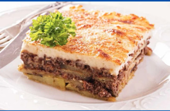
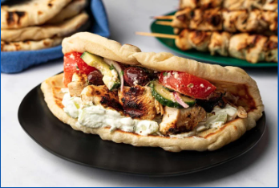
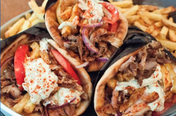

Culinária
Pratos típicos

Moussaka
A moussaka (pronuncia-se "mussacá") é um prato tradicional da culinária grega, frequentemente comparado a uma lasanha de berinjela.

Souvlaki
Souvlaki é um prato grego de fast food feito com pequenos pedaços de carne grelhada no espeto, geralmente de porco ou frango.

Gyros
Gyros é um prato grego popular feito com carne (geralmente porco, frango ou cordeiro) assada em um espeto vertical giratório e servida em pão pita.